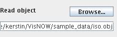
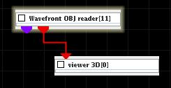
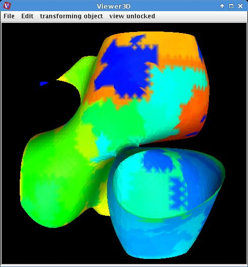

WAVEFRONT OBJ READER
The module reads Wavefront .obj files.
Output data
The output field is irregular. There is a geometry object of the field.
Computation parameters

To select an input file click the browse button and select a file in the file browser or type the file name into the text input field below the button.
Presentation parameters
Presentation tab contents are described in the common interfaces section unter the Presentation Panel entry.
Example

Choose the Wavefront OBJ reader module from the irregular data readers library and move it into the work space. Choose the ... file.
